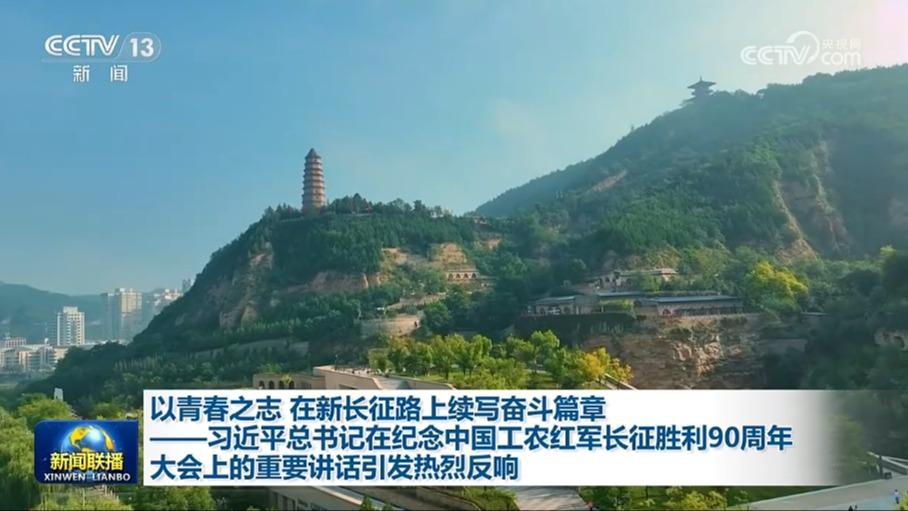
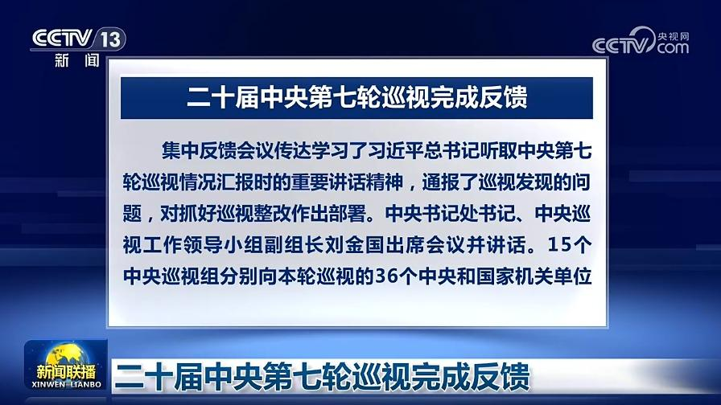
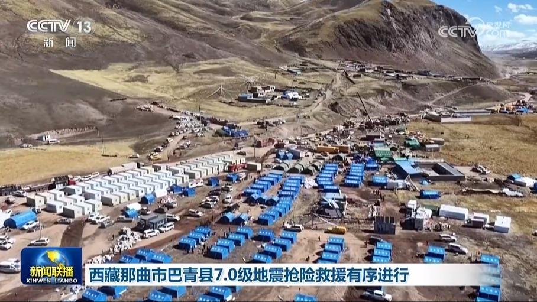
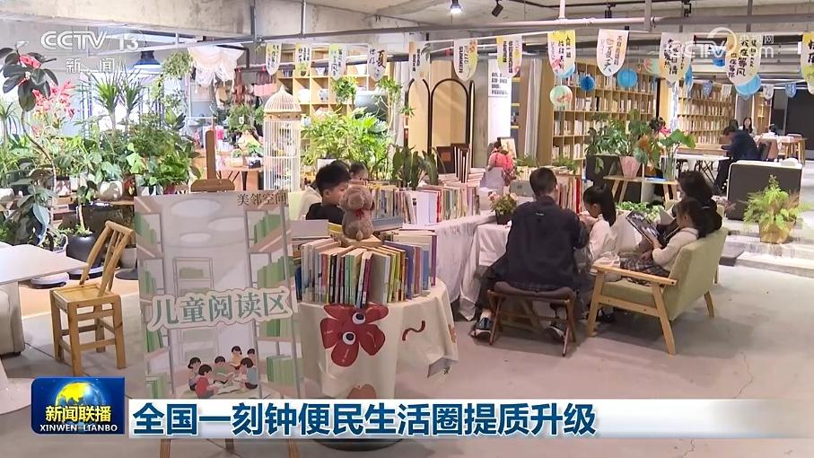
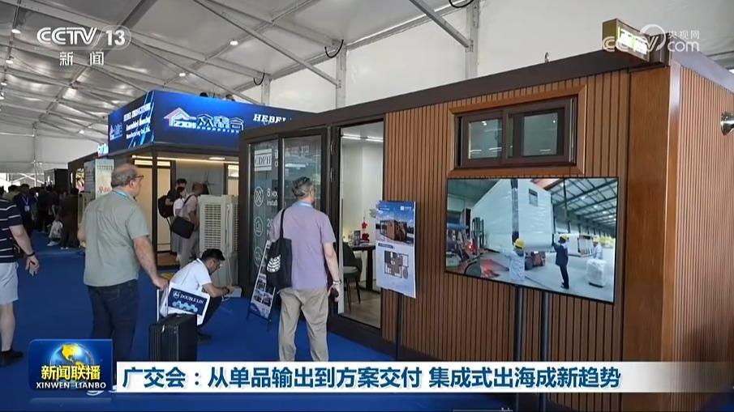
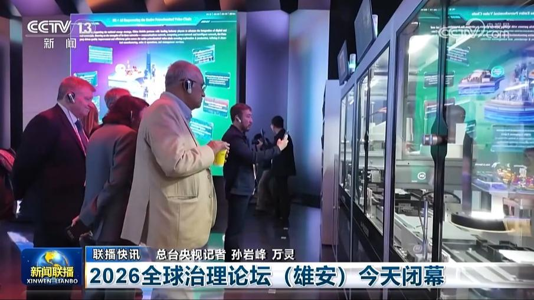
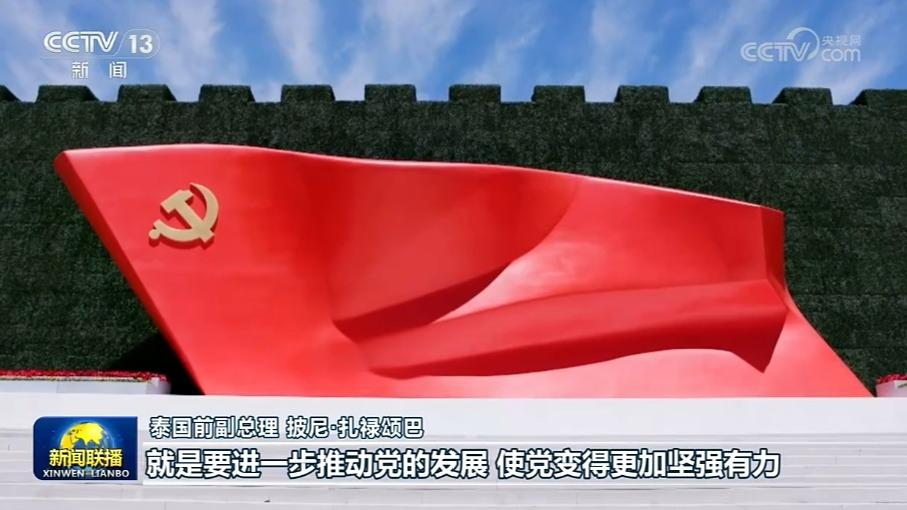
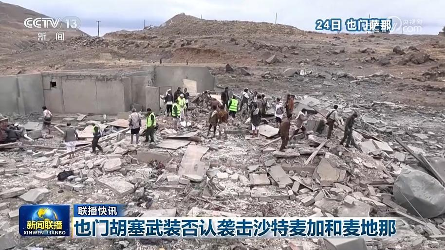

01
习近平同比利时国王就中比建交55周年互致贺信
10月25日，国家主席习近平同比利时国王菲利普互致贺信，庆祝两国建交55周年。
10月25日，国家主席习近平同比利时国王菲利普互致贺信，庆祝两国建交55周年。
习近平总书记指出，注重思想建党、理论强党，是我们党的鲜明特色和光荣传统。党的十八大以来，以习近平同志为核心的党中央始终把思想建设作为党的基础性建设，坚持用习近平新时代中国特色社会主义思想凝心铸魂，全党思想上更加统一、政治上更加团结、行动上更加一致，为强国建设、民族复兴伟业筑牢坚实思想根基。
明天（10月26日）出版的《人民日报》将发表任仲平文章，题目是《在新征程上持之以恒推进全面从严治党》。

习近平总书记在纪念中国工农红军长征胜利90周年大会上的重要讲话，在广大青年中引发热烈反响。大家表示，要以新时代青年的昂扬风貌，不惧艰险挑战，勇于开拓创新，大力弘扬伟大长征精神，同心协力走好新的长征路。

根据党中央部署，二十届中央第七轮巡视反馈工作近日完成。巡视反馈采取集中反馈和巡视组“一对一”反馈相结合的方式进行。
工业和信息化部近日发布2026年1至9月全国船舶工业统计数据，造船业三大指标持续领跑全球。

西藏那曲市巴青县7.0级地震抢险救援各项工作有序推进。昨晚（10月24日）8时30分左右，震区电力供应已全面恢复。截至今天下午3时，西藏军区官兵在玛如乡片区累计完成7个村共计475户搜救排查，并同步开展医疗救助。玛如乡2村受灾严重，今天，当地首批60套安置板房搭建完成，从下午开始，已有群众陆续从帐篷搬入，剩余180套板房将于明天上午全部完成。……

今年，全国超90%的地级以上城市因地制宜推进一刻钟便民生活圈建设。各地坚持问需于民、精准提质，在优化社区便民服务的同时，也在丰富家门口的消费新场景，让百姓生活更加舒适便捷。
今年是开展常态化帮扶第一年。广东、广西两省区因地制宜，不断优化东西部协作机制，推动产业互补、人员互动，扎实推进乡村全面振兴。

第140届广交会二期线下展进入第三天，本期展会，太空舱、便携集成厨房、模块化民宿房屋等一批装配式新品集中亮相，前来参观的客商络绎不绝。从卖零件到卖整房，集成式出海正在撑起一条新增长线。来自加拿大的克里斯托弗第二次参加广交会，去年他在广交会首次发现集成式房屋产品，回国后便做起代理业务。

2026全球治理论坛（雄安）今天闭幕

国际人士高度关注即将召开的中国共产党二十届五中全会。他们表示，中国不断推进全面从严治党，提升治理能力，将推动中国经济高质量发展。他们对中国未来发展充满信心，相信中国的稳定前行将为变乱交织的世界注入更多确定性。

朝鲜新坪郡志愿军烈士陵园修缮竣工